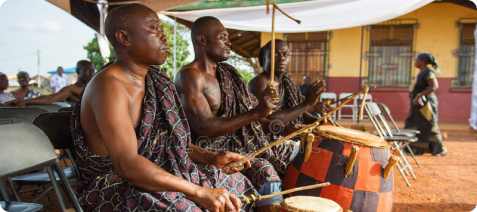
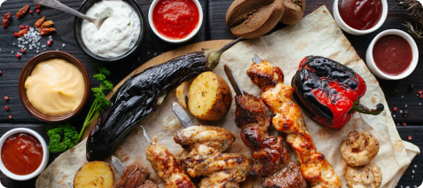

Festas e comemorações de ascendência germânica. A versão feminina conta com um corpete com babados do... Saiba mais...

Festas e comemorações de ascendência germânica. A versão feminina conta com um corpete com babados do... Saiba mais...
Em cada território á uma vasta ritmos de musicas. Muito envolvente que também pode ser utilizado varios tipos de instrumentos para chega... Saiba mais...
Essa é a vestimenta das famosas dançarinas de Flamenco, fenômeno musical que geralmente ocorre em festas na - ou sobre a... Saiba mais...
Em cada lugares se encontra as comidas tipicas da região, com os diferentes e variedade de pratos e sabores ... Saiba mais...
